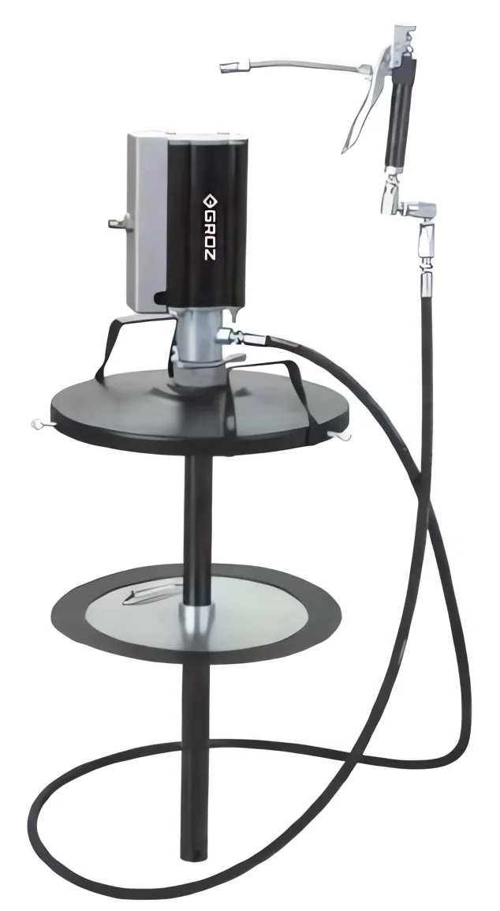

GROZ · Greasing Equipment
Air Operated Grease Ratio Pumps - High Volume
CAT NR GPH/3/ST/BSP · ORD NR 45472
| CAT NR (catalogue number) | GPH/3/ST/BSP |
|---|---|
| ORD NR (order number) | 45472 |
| Box quantity | 1 |
| Variant (printed column) | BSP THREADS |
| Drum cover diameter (inch) | 24-1/2 |
| Drum cover diameter (mm) | 612 |
| Fits | 180 kg / 400lb drums |
| Follower plate dimensions O.D. plate (inch) | 23-11/16 |
| Follower plate dimensions O.D. plate (mm) | 602 |
| Follower plate dimensions O.D. steel end (inch) | 21-5/8 |
| Follower plate dimensions O.D. steel end (mm) | 550 |
Ask for a quote The catalogue PDF, page 97
“Ask for a quote” opens this product in the catalogue: add it to your quote and send it. Buyers from Africa, the Gulf and worldwide are welcome; prices in USD, EUR or INR.
From the GROZ Fluid Handling CC-07 catalogue. Not yet verified: these details were read from the printed catalogue automatically; check the catalogue page before ordering.